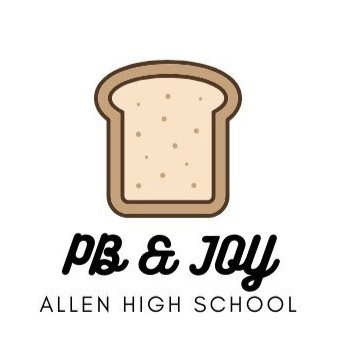

Community Service
-
Merlin Mavens: Helped guide students through understanding computer science concepts in order to complete homeworks. Went through various levels of students from the basics of loops up to object oriented programming.
-

PB&Joy: Created peanut butter jelly sandwiches that went to homeless shelters across Allen, Tx.
-
Library Helpers: Assisted at the local library by running children's reading programs, organizing shelves, and helping visitors with computer use.
-
Toy Drive: Collected and organized toys and books to be donated to children's hospitals during the holidays.